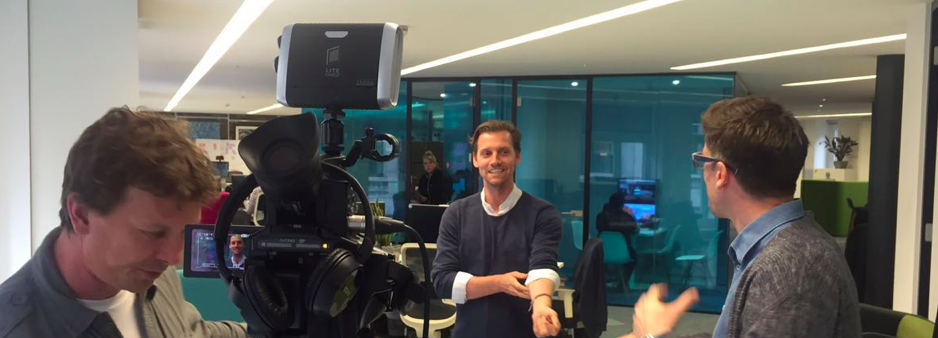
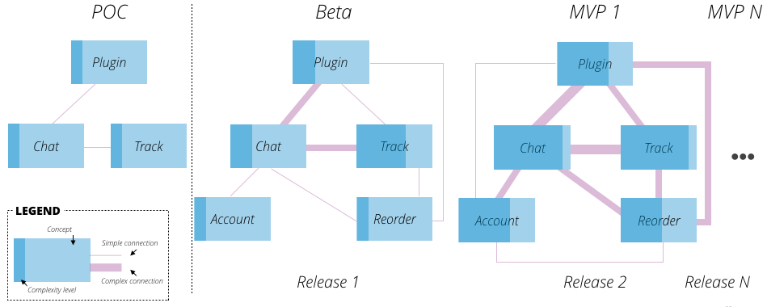
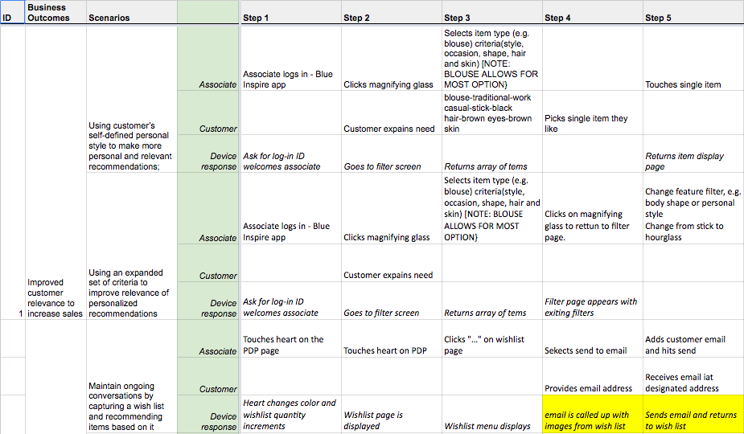
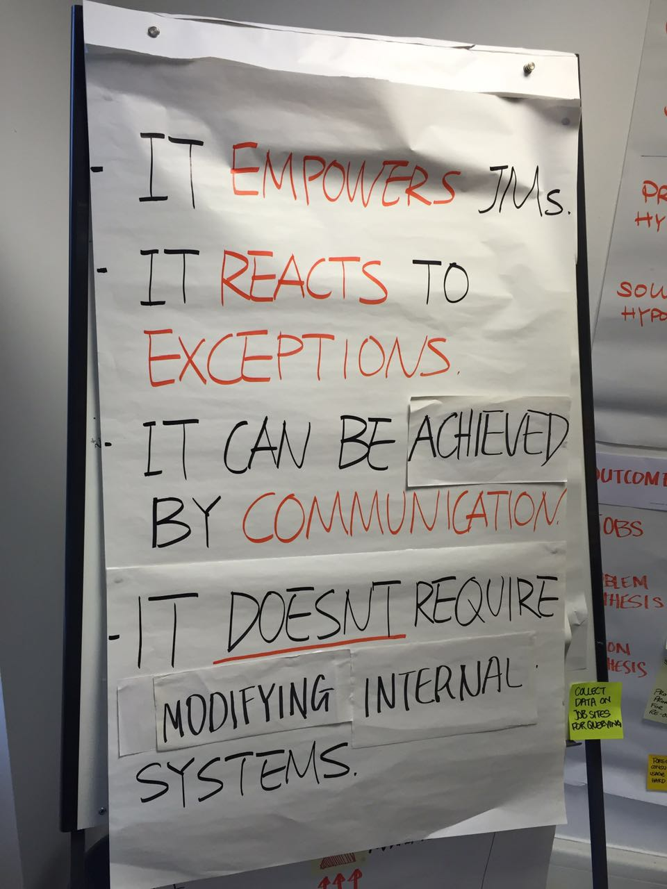

大部分项目上，我所承担的角色是帮助客户寻找到产品战略，并着手落地开始项目实施，在这个过程中，我需要强制自己从发散思维中迅速回到收敛思维、从机会导向迅速回到风险导向，因为大部分的IT项目都可能失败，成功对于IT项目而言很可能是「不失败」。
这说起来似乎有些「缺少志向」，但是在现实中IT项目所面对的，除了软件工程本身的巨大挑战、还有技术之外的需求、设计、沟通、政治、分工、计划、等诸多变数，作为一个大型项目的负责人，一旦进入交付落地阶段，就应该进入「风险模式」。
而「控制需求」成为了「控制风险」中最重要的一环，换言之，一个失败的项目中，需求未得到有效的控制，往往是最重要的失败原因。本文将讨论多年来我在需求控制方面的一些心得。
识别坏味道
要明白软件工程是一件专业度很强的事情，你必须教育客户明白，什么是管理一个软件工程的「坏味道」，以下场景你是否似曾相识：
- 「这个需求我们实现过，只需要一周时间就可以完成」；
- 「关于这个需求你做一个方案给我选一选」、「这两个方案我都不喜欢，你们再想想？」；
- 「这是领导要的，我也没办法」；
- 「没有这个功能我们不能上线」。
当你听到这些话的时候，作为工程管理者的你，就应该警惕可能在「需求控制」方面你正在遇到挑战，让我们来分析一下每句话背后的挑战：
「这个需求我们实现过，只需要一周时间就可以完成」
你的客户正在插手你的工作量估计，这往往是最危险的，一个优秀的项目管理者首先需要做的是让客户完全信任你工作量估计系统是如何工作的，并不断强调你的工作量估计是合理的、公平的、和有效的。
「关于这个需求你做一个方案给我选一选」、「这两个方案我都不喜欢，你们再想想？」
这代表你的客户不理解软件开发中需求分析也是工作量的一部分，AB稿在设计界中广泛存在，在我看来是最低效的一种决策方式，在软件交付中也同样存在，你会尽可能做出一个更趋向于复杂的设计、以求得客户的决策，最终结果是需求被放大。
「这是领导要的，我也没办法」
这代表你的客户正在抛开自己的决策责任，尝试用最不负责任的方式逼迫你答应需求，一旦成功，这种行为就变成一个肆无忌惮的借口。
「没有这个功能我们不能上线」
必须据理力争，请坚信，没有什么功能是阻止上线的，只有阻止上线的、不理智的、缺乏安全的客户。
上面的「坏味道」是我经常要遇到的情况，用什么方法对策呢？以下是我的一些总结：
尽可能靠近决策者
软件工程同样是一个「社会工程」，软件项目的失败往往是因为其社会性的复杂，导致身处其中的人无法处理负责的合作、组织、政治、和职责关系。
而越是处于复杂社会网络的中间、越无法对整个复杂网络产生影响，最好的办法是尽可能地接近决策者，但往往你总是在跟你的直接客户合作，决策者也许是他的上级，你如何接近决策者呢？
我的建议是：「尽可能帮助你的直接客户接近他的上级、也就是真正决策者」，在上一个客户中我们做了以下几件事情：
- 为客户包装向他上级汇报的PPT；
- 总结他上级的想法，例如用可视化的方式包装他上级在说什么；
- 将工作过程拍成视频，供他在组织内传播；
- 每周一次的Newsletter，一些易于传播的图片、小视频等。
 （将项目过程拍摄成专业视频供组织内传播，以此接触高层决策者）
这些内容被我们的客户传播给了他的上级，甚至上级的上级，不一定要等到成功的项目，我们就已经将影响力传递到了决策者，这使得你和你的客户不再是甲乙方的关系，而是合作者，明确这个地位，才是接近决策者的重要意义。
做系统决策人
和你的直接客户建立合作关系之后，你还要努力将自己打造成系统的决策人之一。系统是各种概念建立关联关系的结果，一个优秀的系统决策人需要对以下决定产生影响：
- 是否应该引入新的概念；
- 是否应该将某一概念变复杂；
- 是否应该建立新的关系；
- 是否应该将某一关系变复杂。
 (用系统复杂度的增量方式，包括新增/加强概念和新增/加强关系来建立概念系统模型，用概念模型来讨论需求)
这套「概念系统」应该持续存在于你的脑海里，一旦新的需求出现，你就需要对这个需求做出以下决策：
- 这是否引入新的概念？
- 这是否在将现有概念变复杂？
- 这是否建立了新的关系？
- 这是否在将现有关系变复杂？
我们通常习惯于从「价值」的角度进行决策，而在真实场景中，对任何一个没有上线的产品，谈论「价值」的意义都不大，而谈系统复杂度却是一个更好的策略，因为你把客户与客户的讨论拖入了一个偏向于系统工程的专业讨论，而非一个「非专业」的所谓价值讨论。
当然你必须给客户一个明确的优先级指导框架，例如在一个新系统里，建立新概念间的关系，优于对于一个已有概念或关系的深入优化，达成一致后，决策效率更高。
不要给选择
这个听起来很专断，他背后的含义是努力让客户认为你所给出的基本是最优选择，就算选择，也应该是优、次优、最次选择这样的方式，而不应该是同等权值的盲目拍板。给选择的目的永远是让客户选择我们期待他选择的那一项，如果不给选择也是其中一个选项，那么尽量不给客户选择。
我所使用的策略有如下几种：
- 采用完美的系统思维逻辑帮助客户认定我们选定的就是最优选择；
- 对我们的方案给出完整的思考和选择过程、而不是最终方案而已；
- 给出大量的假设让客户认为「反正都不知道最后结果是怎样，选什么其实都没那么重要」；
- 最后才是给出多个方案对优缺点进行分析。
这样的方式帮助我们强有力地抓住了需求的源头，阻止需求扩大、或朝错误的方向演进。
管理结果而非解决方案
管理需求的核心在于管理结果（Outcome），而不在于管理解决方案，结果和解决方案的区别是什么？假设一个简单的在线小额贷款的产品，也许有一长串功能需求，但核心的结果也许只有几个：
- 借贷者能够借到合适利率的贷款；
- 贷款者能够在合适风险下发放贷款并获得收益；
- 平台能够管理逾期的风险，并从中获益。
把所有的需求讨论放在对于这一系列结果的影响上，而不过多讨论具体实现方式：有了它跟哪个核心结果有关？有了它会对这个核心结果有什么影响？没有它呢？
 (一个用简单Outcome Dashboard来管理需求的例子，通过考察需求对业务结果的影响来规划需求)
切记一点，不是因为东西难就不做、也不是因为东西简单就做，而是思考一个需求对于整体结果的影响。换句话说，一个产品的上线，应该是一系列结果的上线，而不是一系列需求的上线，需求是结果的副产品，应该有产品经理、设计师、架构师来保证，你只需要和客户讨论「最终产品在多大程度上导致了所期待的结果」。
如果没有影响，无论有多简单，都不应该做，如果至关重要，无论多难，都应该完成。
建立游戏规则
就像之前所说的，游戏规则必须建立，这里的游戏规则，我推荐以下几条，你需要花长时间和客户进行讨论、强调、教育、再教育：
没有东西是免费的
所有东西都是有价格的，花时间的，这里包括需求的讨论、编码、改动、测试、调试、沟通等等；
讲不清楚的需求很可能是没价值的
如果讲都讲不清楚，今天讲不清楚、明天还是讲不清楚、你写100页文档也还是讲不清楚、大多数情况，都是没价值的需求，不如推迟决策；
这是系统思考
任何一个新概念的产生、或者一个新关系的出现，都意味着系统其他部分的成本、变动、甚至破坏，谨慎一切新概念、新关系的产生；
社交游戏
复杂问题最终都是复杂的社交游戏（Social Game），能通过政治或者社交解决的方式，尽可能不用技术解决，例如：当前项目上需要其他系统开发的配合解决，花大力气放在协商其他团队改变开发计划，而不是扩大本项目开发需求；
每个阶段都有该阶段专属的规则
特别在需求的前期，讨论越多需求，流入后期的需求范围就越大，在一开始就应该建立需求规则的概念，什么该谈、什么不该谈，而不是简单跳过（例如放入Parking Lot）；
 (在前期需求规划中我们就设定了严格准入标准，任何需求的讨论，如果不符合这些规则，都坚决不谈)
交付大于一切
永远不进行项目延期，目标是在交付期中保证交付既定的结果，而非之前约定的需求列表，可以容忍瑕疵、但不容忍延期；
尊重估算
不要尝试花时间质疑估算，你所有的怀疑会变成工程师巧妙的「套路」，他们会在另外的地方找补回来，反正你不懂，若相信、请深信。
写在最后
大型IT交付项目的巨大风险在于「需求管理」，真正的诀窍是在于将管理需求上升到新的层次：
- 决策者期待；
- 系统概念和关系、以及产品路线图；
- 业务结果；
- 组织内协作和社交。
而不是着眼于需求本身，如果我们只懂得用需求列表中的工作量估算、功能排期、优先级排列，「需求失控」只是时间问题。